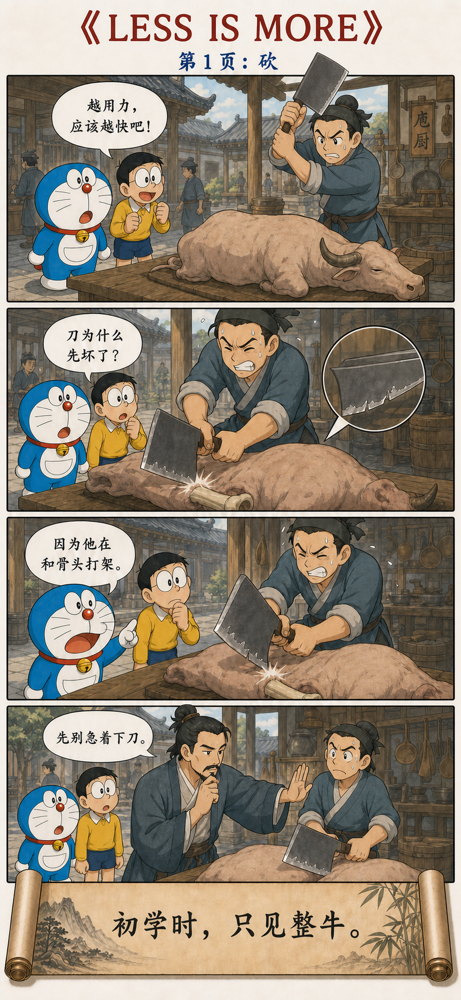
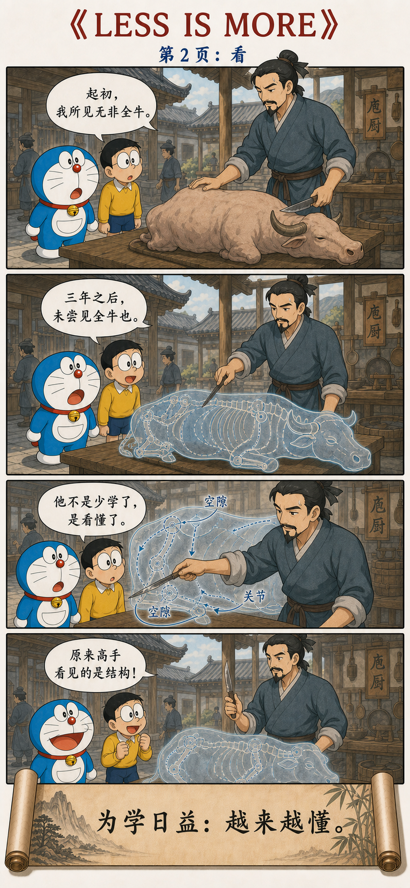
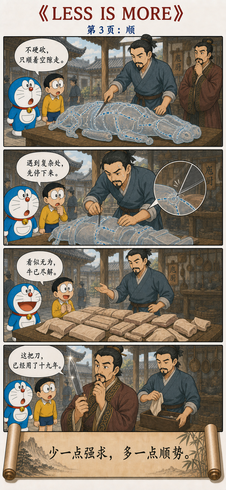

增加知识，减少强求
为学日益，为道日损。
损之又损，以至于无为。
无为而无不为。
取天下常以无事，
及其有事，不足以取天下。
In pursuing learning, one increases day by day. In pursuing the Way, one diminishes day by day. Diminish and diminish again, until one reaches non-action. Through non-action, nothing is left undone. The realm is won by not disturbing it; once contrived interference begins, one is no longer fit to win the realm.
Less is more，但究竟少了什么
学习知识，需要不断增加：多认识一个概念，多掌握一种方法，多看清一层结构。可是体会“道”，方向恰好相反：减少成见，减少欲望，减少那些自以为必要、其实只是在妨碍事情的动作。
Learning grows by addition: another concept, another method, another layer of structure. The Way moves in the opposite direction, reducing preconceptions, compulsions, and actions that appear necessary but merely obstruct what is happening.
一层层减下去，最后到达“无为”。无为不是停止行动，而是不再凭自己的焦虑强行制造动作。正因为不扰乱事物本来的结构，事情反而能够完成。
Layer after layer is removed until one reaches wuwei. This does not mean ceasing to act. It means no longer manufacturing action out of anxiety. Because the natural structure of things is not disturbed, the work can be completed.
不是做得越少越好，
而是少做那些本来就不必做的事。
The point is not to do as little as possible, but to stop doing what never needed to be done.
砍、看、顺：高手怎样减少多余动作



庖丁解牛：从“无非牛”到“未尝见全牛”
《道德经》没有讲庖丁，但《庄子·养生主》为“日益”与“日损”提供了一幅极好的画面。庖丁刚开始解牛时，眼前所见无非是一整头牛。三年以后，他不再只看见外面的轮廓，而能看见筋骨、关节和其中的空隙。
The Daodejing does not tell the story of Cook Ding, but the Zhuangzi gives “increasing” and “diminishing” a vivid image. At first Ding saw nothing but the whole ox. Three years later, the outer shape no longer concealed its joints, structure, and spaces.
他的知识没有减少。恰恰因为知道得更多，他才不必再做那么多无效动作。初学者看见的是一个必须征服的整体，高手看见的却是一条可以通过的路径。
His knowledge has not diminished. Precisely because he understands more, he no longer needs so many ineffective movements. The beginner sees a whole that must be conquered; the master sees a path through it.
砍，是增加力量；看，是增加理解；顺，是减少对抗
看不清结构，只能不断增加力气。
知识增加以后，开始看见关节与空隙。
沿着结构行动，多余的力量自然减少。
所以，这一章不是从“知道”退回“无知”，而是从“需要时时想起知识”，走向“知识已经进入动作”。刚学骑车的人要记住平衡、方向和脚下的力度；真正会骑以后，身体已经能够回应道路，不必每秒向自己下达命令。
The chapter does not retreat from knowledge into ignorance. It moves from constantly recalling what one knows to having knowledge embodied in action. A beginner cyclist thinks about balance, direction, and pressure on the pedals; an experienced rider responds to the road without issuing a command every second.
力气越大，为什么刀反而坏得越快
庖丁说，普通厨师每月换刀，因为他们用刀砍断骨头；好厨师每年换刀，因为他们仍然要切割筋肉。自己的刀已经用了十九年，解过数千头牛，刀刃却仍像刚磨好一样。
Ding says that an ordinary cook changes blades every month because he hacks through bone, while a good cook changes them every year because he still cuts through tissue. Ding’s own blade has served for nineteen years and thousands of oxen, yet remains as sharp as if freshly honed.
不是他的刀特别坚硬，而是刀刃从来不与最坚硬的地方正面碰撞。“彼节者有间，而刀刃者无厚”，骨节之间本来就有空隙；薄薄的刀刃进入空隙，自然“游刃有余”。
The blade does not survive because it is exceptionally hard. It survives because it does not collide with the hardest places. Joints contain spaces; a thin edge entering those spaces has room to move freely.
Less is more：
少的不是理解，而是摩擦。
Less is more: what diminishes is not understanding, but friction.
真正的顺势，也知道什么时候应该停
“游刃有余”常被误解成高手永远轻松。庄子特意补了一笔：庖丁遇到筋骨交错的复杂地方，仍然会警觉起来，目光停住，动作放慢，下刀极其轻微。
“Moving with room to spare” is often mistaken for permanent effortlessness. The Zhuangzi adds an important detail: at a difficult knot, Ding becomes alert, fixes his gaze, slows down, and moves the blade with extreme care.
这说明“顺”不是闭着眼睛依赖习惯，也不是把所有问题都当成简单问题。越是熟练，越知道哪里可以自然通过，哪里必须停下来重新观察。
Following the structure does not mean acting blindly from habit or pretending every problem is simple. Greater mastery brings a clearer sense of where movement can continue naturally and where one must stop and look again.
无为不是没有动作，而是没有多余的强作
庖丁确实握刀、观察、移动，也完成了解牛。他并非“什么都没做”。他没有做的，是拿刀与骨头较劲，没有把自己的力量强加给对象，也没有为了显得努力而制造更多动作。
Ding holds the blade, observes, moves, and completes the work. He is not doing nothing. What he does not do is fight bone with steel, impose force on the object, or multiply gestures merely to appear industrious.
“无为而无不为”不是保证任何愿望都会自动实现。它说的是一种行动品质：当知识已经足以看清结构，减少妄动，反而让真正必要的动作更准确。
“Through non-action, nothing is left undone” does not promise that every wish will realize itself. It describes a quality of action: once knowledge reveals the structure, reducing contrived movement makes the necessary movement more precise.
曹参没有急着证明自己是一个新宰相
第八句忽然从个人修养转向“取天下”。《史记·曹相国世家》记载，萧何去世后，曹参继任汉朝相国。他没有为了显示新官上任而全面更张，而是“一遵萧何约束”，继续执行已经建立并且能够运行的制度。
The chapter suddenly moves from personal cultivation to the realm. According to the Records of the Grand Historian, after Xiao He died, Cao Shen succeeded him as chancellor. Rather than overhaul everything to display a new administration, he continued the working system Xiao had established.
汉惠帝觉得曹参似乎不治理政事。曹参便问：陛下与汉高祖相比如何？自己与萧何相比又如何？既然高祖和萧何已经把法令定明，现在皇帝垂拱、群臣守职，不使已经安定的秩序再次折腾，不也可以吗？
Emperor Hui wondered whether Cao was neglecting government. Cao asked whether the emperor surpassed Gaozu, and whether he himself surpassed Xiao He. Since Gaozu and Xiao had already established clear institutions, why disturb them merely to demonstrate activity?
曹参的做法并不意味着制度永远不能改革；它针对的是另一种危险：把“我必须有所作为”的冲动，置于百姓真正需要的稳定之上。司马迁最后评价，百姓刚刚摆脱秦朝的严酷，曹参与民休息，所以天下称美。
This does not mean institutions should never change. It addresses a different danger: placing a leader’s need to be seen acting above the stability people actually need. Sima Qian concludes that after the harshness of Qin, Cao allowed the people to rest, and the realm praised his government.
该增加的增加，该减少的减少
所以，第 48 章不是反对学习，也不是赞美懒惰。没有“日益”的长期学习，庖丁不可能看见结构；没有“日损”的主动减法，他又只会把更多知识变成更多招式。
Chapter 48 is neither anti-learning nor a praise of laziness. Without years of increasing knowledge, Cook Ding could never see the structure. Without deliberate subtraction, he would merely convert more knowledge into more unnecessary techniques.
知道得更多，所以不必处处用力
初学者面对整头牛，只能增加力气；庖丁看见骨节之间的空隙，于是减少对抗。曹参看见天下刚刚经历战争与严政，便减少扰动。两则故事都在提醒：真正有效的行动，不由动作的数量证明，而由它是否顺着真实结构完成。
The beginner confronts a whole ox by adding force; Cook Ding sees the spaces between joints and reduces resistance. Cao Shen sees a realm exhausted by war and harsh rule and reduces disturbance. In both stories, effective action is measured not by the number of gestures, but by whether it works with the structure of reality.
为学日益，理解越来越深；
为道日损，强求越来越少。
In learning, understanding grows deeper. In the Way, compulsion grows smaller.